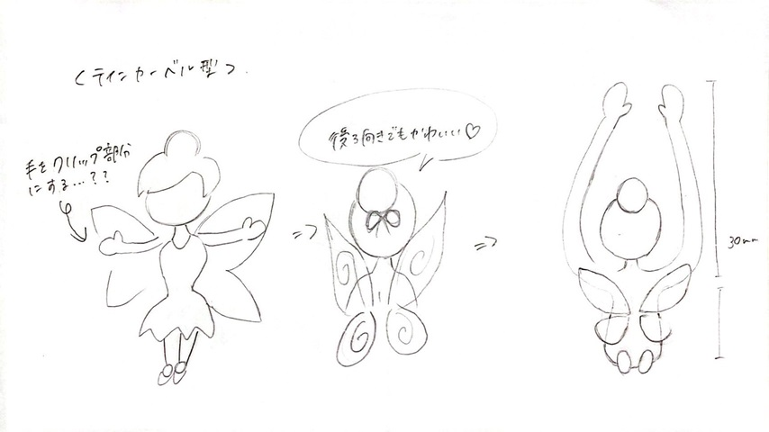
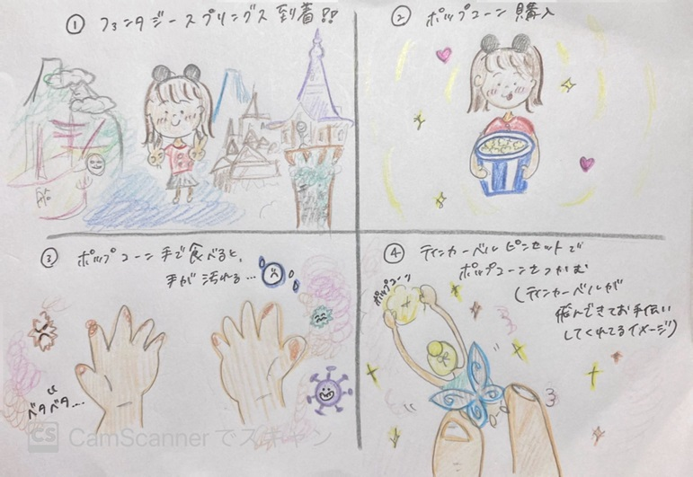
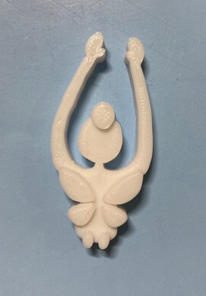
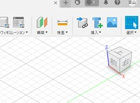
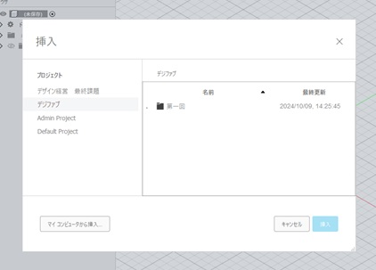
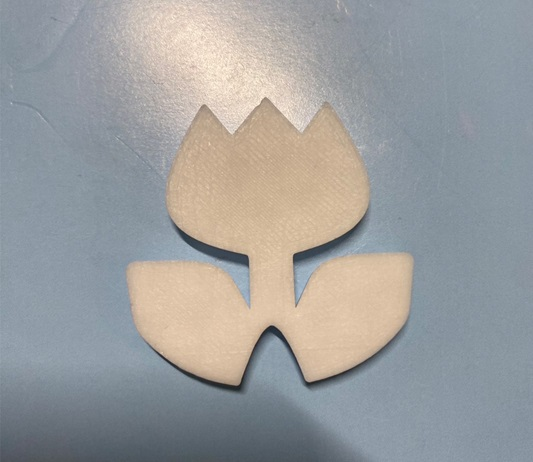
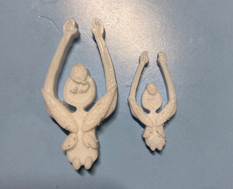
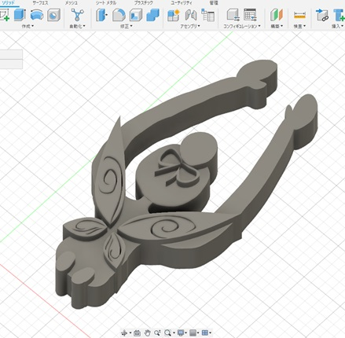

構想段階スケッチ・ストーリーボード


ティンカーベルの腕の部分を、ピンセットとしての機能にしようと考えこのような形になった。
私がポップコーンを食べる時に、手を汚さずに食べられるよう、ティンカーベルがお手伝いしてくれているようなイメージだ。
完成品の写真

ティンカーベルのお団子・羽・足に凹凸を付けて、立体的にしたのがポイントだ。
羽の形を本物に近づける為に、形をシャープにしたり、羽の模様を付けるのも試みたが失敗してしまった。
結果、これが雄一成功したものとなる。
ティンカーベルピンセットのstlファイルはこちら
制作POINT・調べたこと
💛スケッチの写真を貼り付ける
貼り付けた写真に沿って、輪郭をなぞっていく。
 
方法
挿入から「キャンバス」を選択。
次に「マイコンピュータから挿入」をクリックして、ファイルを選択。
💛凹凸をつける
スケッチが終わったら、押し出しを選択し高さだしをする。
二つ目に押し出したい部分が選択しづらい時は、一旦今押し出してあるボディを非表示にすると簡単だ。
失敗作について
- チューリップのピンセット

下のくぼんでいる部分で何か挟むイメージだったが、想像以上に素材が固く、何もつかめなかった。
これが一番最初にプリントしたもので、素材の特性を掴む事が出来たので結果的に良かった。
チューリップピンセットの失敗例stlファイルはこちら
- 再現度を上げたティンカーベルピンセット

羽の模様・お団子に付いているリボン・羽の形の変更をしてプリントしたものだ。
最初、高さ５ｍｍを基準にプリントしたら、長さ・幅が小さくなってしまった。（右）
それが原因で上手くプリント出来なかったのだろうと推測し、長さを50㎜基準でプリントしたが、それでも失敗してしまった。（左）
この経験から、細かすぎるデザインはプリントするのが難しいと気付くことが出来た。
元のデザイン⬇️

ティンカーベルピンセットの失敗例stlファイルはこちら